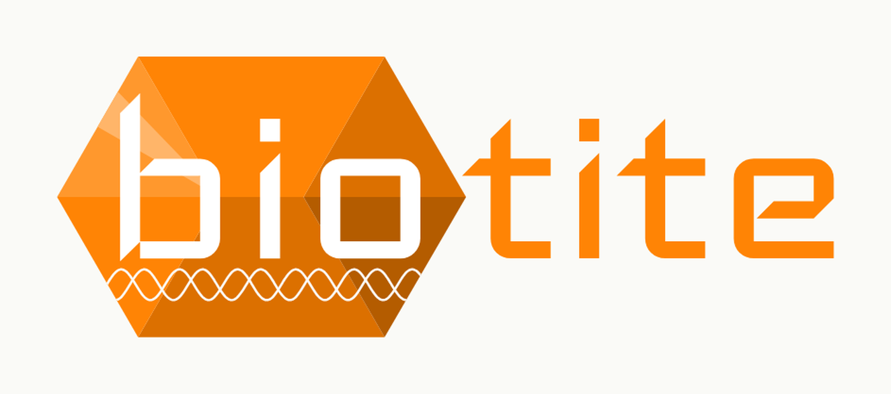

Biotite, one library for the boring parts
A note to self. Parsing a CIF, aligning two sequences, querying the PDB: I have written each of these more than once. Biotite has all of them, in one Python package.

pip install biotite.The pitch is that it bundles the routine parts of computational molecular biology into one library with a consistent API, so a small analysis script does not start with two hundred lines of parsing. Four things it covers:
- Sequences. Nucleotide and protein, plus structural alphabets such as 3Di. Modular alignment for finding homologous regions or mapping reads, and Matplotlib-based views from alignments to feature maps.
- 3D structures. Handled in a NumPy-like way, for large biomolecules and small ones. Filtering, transformation, superimposition, surface area. Reads PDB, CIF and BinaryCIF, MOL/SDF and trajectory formats.
- Databases. NCBI Entrez, UniProt, RCSB PDB and PubChem, with queries composed from Python logical operators instead of each service's REST API.
- External tools. Wrappers for multiple sequence alignment, secondary structure annotation and more. Python objects in, Python objects out; the temporary files and the command line stay out of sight.
The part I expect to use first is the structure side: BinaryCIF straight into a NumPy-shaped object, then superimposition and contact analysis without leaving Python.
Credit. Biotite is by the Biotite contributors, led by Patrick Kunzmann, under a BSD 3-Clause licence. Docs: biotite-python.org. Source: github.com/biotite-dev/biotite. The logo is theirs.
Cite it if you publish with it: Kunzmann & Hamacher, BMC Bioinformatics 2018, 19, 346, doi.org/10.1186/s12859-018-2367-z; and Kunzmann et al., BMC Bioinformatics 2023, 24, 1, doi.org/10.1186/s12859-023-05345-6.
Biotite：把琐碎的部分交给一个库
一篇备忘。解析 CIF、比对两条序列、查 PDB，这些我都不止写过一遍。Biotite 把它们装在同一个 Python 包里。
pip install biotite。它的卖点是把计算分子生物学里那些例行工作收进同一个库、同一套 API，这样一个小分析脚本不必以两百行解析代码开头。四个方面：
- 序列。核酸与蛋白质，另外支持 3Di 这类结构字母表。模块化的比对，用来找同源区段或做 read mapping，还有基于 Matplotlib 的可视化，从序列比对图到 feature map。
- 三维结构。以类似 NumPy 的方式处理，大分子小分子都行。筛选、变换、叠合、表面积计算。读得了 PDB、CIF 与 BinaryCIF、MOL/SDF 以及各种轨迹格式。
- 数据库。NCBI Entrez、UniProt、RCSB PDB、PubChem，查询用 Python 的逻辑运算符拼出来，不用去学每家的 REST API。
- 外部软件。多序列比对、二级结构注释等工具的封装。进去是 Python 对象，出来还是 Python 对象，临时文件和命令行都不用管。
我估计自己先用上的会是结构那一半：BinaryCIF 直接读成 NumPy 形状的对象，然后叠合、接触分析一路留在 Python 里做完。
署名。Biotite 由 Biotite contributors 开发，主导者是 Patrick Kunzmann，采用 BSD 3-Clause 协议。文档：biotite-python.org，源码：github.com/biotite-dev/biotite。标志为其项目所有。
引用（如果发表时用到）：Kunzmann & Hamacher, BMC Bioinformatics 2018, 19, 346, doi.org/10.1186/s12859-018-2367-z；以及 Kunzmann et al., BMC Bioinformatics 2023, 24, 1, doi.org/10.1186/s12859-023-05345-6。
Biotite：面倒な部分をまとめて引き受ける
自分用の覚書。CIF の解析、二本の配列のアラインメント、PDB への問い合わせ。どれも一度ならず書いてきた。Biotite はそれらを一つの Python パッケージに収めている。
pip install biotite。売りは、計算分子生物学の定型作業を一つのライブラリと一貫した API にまとめている点である。小さな解析スクリプトが二百行の解析処理から始まらずに済む。柱は四つ。
- 配列。核酸とタンパク質に加え、3Di のような構造アルファベットにも対応。相同領域の探索やリードマッピングのためのモジュール式アラインメントと、Matplotlib ベースの可視化（アラインメント図から feature map まで）。
- 立体構造。NumPy に近い形で扱える。生体高分子も低分子も、フィルタリング、変換、重ね合わせ、表面積計算。PDB、CIF と BinaryCIF、MOL/SDF、各種トラジェクトリ形式を読める。
- データベース。NCBI Entrez、UniProt、RCSB PDB、PubChem。クエリは Python の論理演算子で組み立てられ、各サービスの REST API を覚える必要がない。
- 外部ソフトウェア。多重配列アラインメントや二次構造アノテーションなどのラッパー。入力も出力も Python オブジェクトで、一時ファイルとコマンドラインは表に出てこない。
自分が先に使いそうなのは構造側である。BinaryCIF をそのまま NumPy 的なオブジェクトとして読み、重ね合わせと接触解析まで Python の中で完結させたい。
クレジット。Biotite は Biotite contributors による開発で、中心は Patrick Kunzmann、ライセンスは BSD 3-Clause。ドキュメント：biotite-python.org、ソース：github.com/biotite-dev/biotite。ロゴは同プロジェクトのものである。
引用（論文で使う場合）：Kunzmann & Hamacher, BMC Bioinformatics 2018, 19, 346, doi.org/10.1186/s12859-018-2367-z、および Kunzmann et al., BMC Bioinformatics 2023, 24, 1, doi.org/10.1186/s12859-023-05345-6。